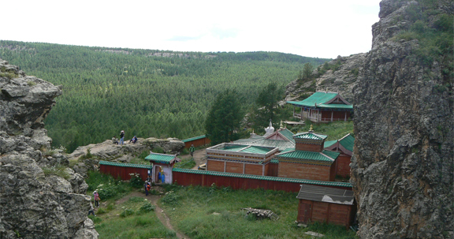

Алтай таван богд
Алтай Таван богд нь Баян-Өлгий аймгийн Улаан хус сумын нутагт байрладаг бөгөөд түүний биологийн тогтоц, төрөл зүйл нь Монголд байхгүй өвөрмөц. Энэ нь таван ноён оргилоос бүрдэнэ. Мөсөн голоос эх авсан Цагаан гол нь хүмүүсийн сонирхолыг ихээр татдаг газар. Мөсөн гол нь 30 км урт, 300.500 м өргөн, 50.200 метр гүн ангалуудтай бөгөөд мөнх цастай.
Алтан-Овоо, Шилийн богд
Алтан-Овоо нь Сүхбаатар аймгийн нутагт Молцог элсний хойд зах Дарьганга сумын төвийн дэргэд оршдог. 1354 м өндөр шовгор хэлбэр нь эвдрээгүй үлдсэн бөгөөд галт уулсын хүрмэн чулуу их. Амсар нь баруун хойшоо сэтэрч урссан байдаг. Харьцангуй өндөр нь 100 м боловч аль ч талаасаа 60 км-ийн алсаас сүр бараатай харагддаг галт уул юм. Алтан-Овоо уулыг бүр 1700-аад оноос нутгийн тахилгатай болгосон бөгөөд 1913 оноос төрийн их тахилгатай уул болгосон билээ. Эл уулын орчмын хүн чулуудыг 1998 онд улсын хамгаалалтад авчээ.
Төвхөн хийд

Өвөрхангай аймгийн Бат-Өлзийт сумын төвөөс зүүн хойш 20 гаруй км зайд Төвхөн ширээт хэмээх уулын орой болох түшлэгт суудал мэтээр тогтсон байц хайдны дундах багавтар тавцан дээр Төвхөн хийд оршдог. Анх 1648 онд l Богд Занабазар арав гаруй настай байхдаа энэхүү байгалийн өвөрмөц тогтоцтой газрыг сонирхон үзэж, 1651 оны үед номын бясалгал хийх чулуун туурга ханатай жижиг байшин бариулсан байна. Энэ нь одоогийн Төвхөн хийд билээ.
Эрдэнэ зуу хийд, Хархорин

Эрдэнэ зуу нь манай орны хамгийн эртний Бурханы шашны хийд юм. Тус хийд нь Өвөрхангай аймгийн Хархорин сумын төвийн ойролцоо, эртний хот Хархорумын туурийн хажууд байрладаг. Энэ хийд өвд бүртгэгдсэн Орхоны хөндийн соёлын дурсгалд багтдаг.
Хар балгас

Төв Азийн нүүдэлчин ард түмний дунд VII-IX зууны үед ээлжит төр улсаа байгуулан 100 орчим жил оршин тогтнож байсан Уйгурын хаант улсын нийслэл Ордубалык гэдэг их тотын нуранхай Архангай аймгийн Хотонт сумын нутагт Орхоны хөндийд буй. Үүнийг нутгийн ардууд Хар балгас гэдэг.
Билгэ хааны онгон цогцолбор
Архангай аймгийн Хашаат сумын нутагт Хархориноос зүүн хойш 40 км-т, орших YI-YIII зууны үед цэцэглэж байсан Түрэг улсын хаан Билгэ, түүний дүү Культегины тахилгын цогцолбор хадгалагдан буй. Дэлхийн шинжлэх ухаанд “Орхоны бичээс” гэж алдаршсан бичиг түүхийн ховор нандин дурсгал болох Билгэ хааны гэрэлт хөшөө Түрлэг улсын сүүлчийн алдарт хаан бөгөөд 19 жил улсаа удирдсан билээ.